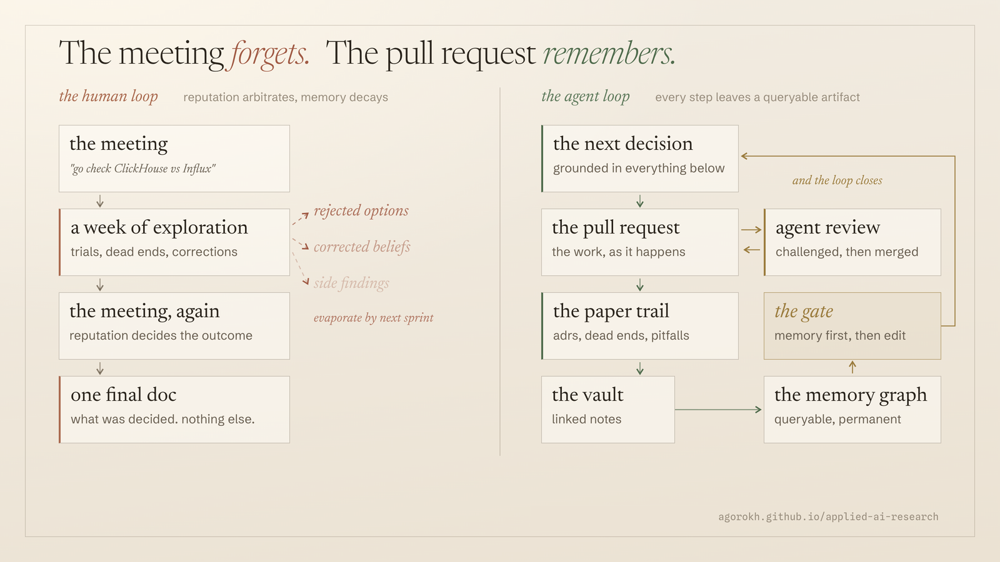

"How do you expect agents to behave properly?"
I got some version of this all week: how can you rely on agents in an engineering process, how do you expect them to act correctly without a human watching every step. It is a fair question, and it rests on an assumption worth pulling out into the light: that the agent is the fragile part, and the human process it plugs into is the solid one.
This note argues the opposite is closer to the truth. The fragile thing in most engineering organizations is not any single worker, human or machine. It is what the process remembers. And on that dimension, the conventional way of making engineering decisions has a failure mode so well documented that the research reads like an indictment.
The conclusion survives. The intelligence that produced it does not.
Picture the usual loop. A lead engineer, Josh, says in a meeting: Sam, go figure out whether we should build the warehouse on ClickHouse or stay on Influx. Sam goes away for a week, tries things, hits dead ends, changes his mind twice. The team gets back together and talks it through. Josh trusts Sam's read, because Sam has earned that, and the team converges. Someone writes the implementation doc for the winning option.
In the best case, that doc says what was decided and why. What it never contains is the week: what Sam actually tried, which alternative died for which reason, which assumption turned out to be wrong and how he caught it, the side findings that were interesting but not relevant that day. All of that lived in Sam's head and in the hallway, and it evaporates by the next sprint. Six months later, when the team hits a wall, nobody reasons from Sam's week. It no longer exists anywhere.
{kind=link}

This is not me being dramatic; the baseline is measured. In a 2024 industrial field study, 83 percent of practitioners said architecture decisions were documented rarely or occasionally, with no clear guidelines, and half were dissatisfied with what did get written. Robillard's interviews with 27 developers and managers across three companies found that when engineers leave, the people who inherit their code are left "guessing the intent", and one participant described spending "at least three or four days, maybe more than eight hours a day" reverse-engineering what a departed colleague could have explained over coffee.
And the loss is worse than the averages suggest. Rigby and colleagues measured turnover-induced knowledge loss at Avaya and Chrome and found it heavy-tailed: the bad quarters lost 3.6 to 3.8 times the expected knowledge. An organization that plans for typical attrition is systematically underestimating the real risk.
The conclusion survives in the org. The reasoning that produced it does not.
Rarely documented decisions, successors guessing at intent, multi-day recovery costs, heavy-tailed losses concentrated in exactly the tacit knowledge that never got written down. Every claim in this paragraph traces to a primary source in the references.
"Just write it down" has been failing for forty years.
Capturing design reasoning is not a new idea. Issue-based information systems, IBIS and its graphical successor gIBIS, tried to map arguments, positions, and rejected alternatives back in the 1980s. The systems worked; the adoption did not. Horner and Atwood's survey of the barriers names the reason, borrowing Grudin's groupware principle: there must not be a disparity between who pays the cost and who gets the benefit, and "a major shortcoming in design rationale is the failure to minimize the cost to the original designers." The engineer with the knowledge pays at the busiest moment; the beneficiary is someone else, later, if the archive is even searchable then.
Robillard's interviews add the uncomfortable nuance: even when documentation exists, the practical knack, the "fine tuning in the heads of people", stays there and leaves with them. Documentation replaced a departed expert only in the ideal, minority case. More often it was missing, disorganized, stale, or in the wrong shape for the question at hand.
The honest reading is not that engineers are lazy.
It is that for forty years the writing cost too much and the reading almost never happened. Rationale capture died on Grudin's cost-benefit disparity, not on anyone's character.
Two things change with agents, and neither is "the model is smart."
The writing became a byproduct. In the ecosystem this note comes from, every change ships as a pull request. Dead ends become investigation notes, recurring mistakes become pitfall entries, choices become decision records. The repository behind this site carries 650 merged pull requests and 386 knowledge nodes, among them 198 investigations and 99 decision records; the fleet it belongs to, sixteen repositories run the same way, this one included, carries 5,838 merged pull requests and 3,109 knowledge nodes, including some 1,270 investigations, 384 decision records, and 185 registered pitfalls, counted on 2 july 2026. Nobody sat down after work to document any of it; the artifacts are the exhaust of doing the work. And they do not land blind: every pull request is reviewed before merge, by other agents and review bots arguing with the author, and the review threads themselves become part of the preserved record. The chain is not "an agent wrote a note". It is proposed, challenged, revised, merged.
The reading became enforceable. The knowledge nodes are ingested into a graph index, and a deterministic gate blocks an agent from touching code until it has run a relevant query against that memory. Retrieval stopped being a virtue and became a precondition. When an agent picks up a task, the graph can answer: we tried this, it died for this reason, here is the note.
A fair question I am deliberately not answering here: what happens when there are thousands of decision records, does the graph bloat, do you feed everything into memory forever? That is a real problem, it is a separate problem, and it is being worked: supersession pointers, node schemas, ingest cadence, archives that expire. For this note, the contract is simply that the chain is saved, first as linked notes, then into the graph.
There is a detail from the turnover research that I find quietly damning for the meeting-based way. When 269 engineers were surveyed on which channels project knowledge is actually exchanged and created through, commits ranked first, above code reviews, above project documentation, and well above meetings. And version-control traces alone carry real signal: co-change history predicted the right successor for abandoned code 34 to 48 percent of the time, versus 7 to 10 percent for random assignment.
The research frontier is starting to formalize both halves of this. The big 2025 survey of agent memory argues that explicit, token-level memory, text and knowledge graphs, is the form that is inspectable, auditable, and traceable back to "concrete memory units". A 2026 economic analysis proposes treating tokens spent on persistent knowledge as capital goods rather than consumables, and volunteers an honest detail I appreciate: in its own small case study, compounding did not make queries cheaper in raw tokens. You are not buying a cheaper question. You are buying a durable asset. Both papers are arguments and small-scale measurements, not field evidence, and I cite them as exactly that.
The funny thing about my hypothetical.
I keep reaching for "ClickHouse versus Influx" as a made-up example. Then I checked the vault. The repo behind this site made exactly that decision in June, and the preserved chain is a small case study in everything above.
The original decision record chose ClickHouse for a telemetry warehouse and preserved, inline, a belief I had gotten wrong: an earlier research pass concluded there was "no public signal" of a related platform moving to ClickHouse, and the correction records both the new fact and why the first pass missed it. Nine days later a new record superseded the host layout, with an explicit pointer; the old node stayed, banner on top. Ten days after that the server crashed, and the reliability decision reasoned from the preserved chain, why the build was pinned, why re-pulling was riskier, and recorded the one dissenting review opinion for the next reader.
Nobody documented heroically. The workflow exhaled it. And it is exactly what the next storage decision, made by me, a teammate, or an agent, will reason from.
The honest ledger, both columns.
Established, each claim verified against its primary source. Turnover destroys organizational knowledge, the tacit part is the most damaging, and the loss is heavy-tailed. The undocumented-decision baseline is measured and bad. Recovery from a departure costs days of full-time reverse engineering. Artifacts, especially commits, are the channel engineers actually use to recover knowledge. Introducing decision records measurably improved documentation quality in a field study. And rationale capture historically failed on Grudin's cost-benefit disparity, not on engineers' character.
Not established, and this note does not claim it: that an agent-maintained reasoning chain measurably compounds into better long-term outcomes. That is the hypothesis. The published support is arguments and small case studies; my own evidence is one operator, one ecosystem, no control group. Three risks get their own lines.
- Write-only archive. If the graph is never consulted at decision time, all of this is theater. That is exactly why consultation is enforced by a deterministic gate rather than requested by a guideline.
- Rot. Agent-written notes can go stale faster than human ones, because no human paid a cost they would defend. Supersession pointers and schema checks help; rot remains a maintenance bill, not a solved problem.
- Perception. METR's randomized trial found experienced developers 19 percent slower with early-2025 AI tools while believing they were 20 percent faster, and its 2026 follow-up came back inconclusive. Feelings of speedup are not data, in either direction, including mine.
The hypothesis is measurable, and I intend to measure it.
How often already-settled decisions get re-attempted. How often registered pitfalls recur. Whether preserved chains are actually cited by later decisions. All three are instrumentable in this ecosystem, and a future note will report them.
You do not trust the agent. You trust the substrate it stands on.
A human team runs on memory and reputation. Both are real, and both are private and lossy. An artifact-first ecosystem runs on a chain anyone can query and an agent can be forced to query. Some weeks we do not move the needle on any single technical direction. But every pull request, every dead end, every corrected belief made the substrate smarter, and the substrate is what the next decision stands on.
The measured half of this story says the conventional way burns intelligence at a well-documented rate. The hypothesis half says agents finally make the alternative affordable. I intend to keep measuring.
An independent applied-AI engineering note by Arseny Gorokh. Not an official EPAM publication. The workflow described, the gates, the vault, and the memory graph are the author's own single-operator ecosystem; the cited studies belong to their named authors. The half of the argument that is hypothesis is labeled as hypothesis, and the numbers quoted from the literature were verified against the primary sources before publication. N = 1 on the lived system; treat the workflow claims as a design worth testing, not a result.
References
- M. P. Robillard, "Turnover-Induced Knowledge Loss in Practice", ESEC/FSE 2021. Interviews with 27 professional developers and managers: "guessing the intent", the multi-day recovery quote, and documentation replacing experts only in the ideal case.
- P. C. Rigby et al., "Quantifying and Mitigating Turnover-Induced Knowledge Loss", ICSE 2016. Heavy-tailed losses at Avaya and Chrome (3.6 to 3.8 times expected) and successor prediction from co-change history (34 to 48 percent versus 7 to 10 percent random), the data behind Figure 2.
- E. Jabrayilzade, M. Evtikhiev, E. Tüzün, and V. Kovalenko, "Bus Factor in Practice", ICSE-SEIP 2022. The 269-engineer survey ranking knowledge-exchange channels: commits first at MRR 0.560, above code reviews (0.403), issues (0.316), project documentation (0.268), and meetings (0.214 and 0.203); also the report of up to 6 person-months to recover a project after a departure.
- B. Ahmeti, M. Linder, R. Groner, and R. Wohlrab, "Architecture Decision Records in Practice: An Action Research Study", ECSA 2024: 83 percent reported decisions documented rarely or occasionally before ADRs; agreement and satisfaction scores rose measurably after a three-month introduction.
- J. Horner and M. E. Atwood, "Design Rationale: The Rationale and the Barriers", citing Grudin's cost-benefit disparity; with J. Conklin and M. Begeman's gIBIS (1988) as the design-rationale prior art.
- A systematic review of turnover-induced knowledge loss, 91 empirical studies 2000 to 2022, The Learning Organization: the most detrimental losses come from departures of critical employees whose knowledge is tacit.
- "Memory in the Age of AI Agents" (survey, 2025): explicit token-level memory is inspectable, auditable, transferable, and decisions trace back to concrete memory units. "Knowledge Compounding" (2026): tokens spent on persistent knowledge as capital goods; in its own four-query case study, compounding did not minimize raw token cost.
- METR, the early-2025 developer productivity RCT (16 experienced open-source developers, 246 issues: 19 percent slower with AI, forecast +24, post-hoc belief +20) and the 2026 update reporting the late-2025 follow-up as inconclusive under selection effects.